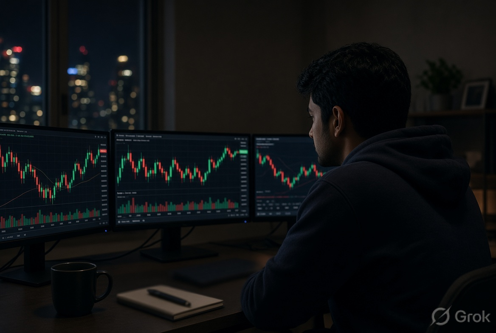
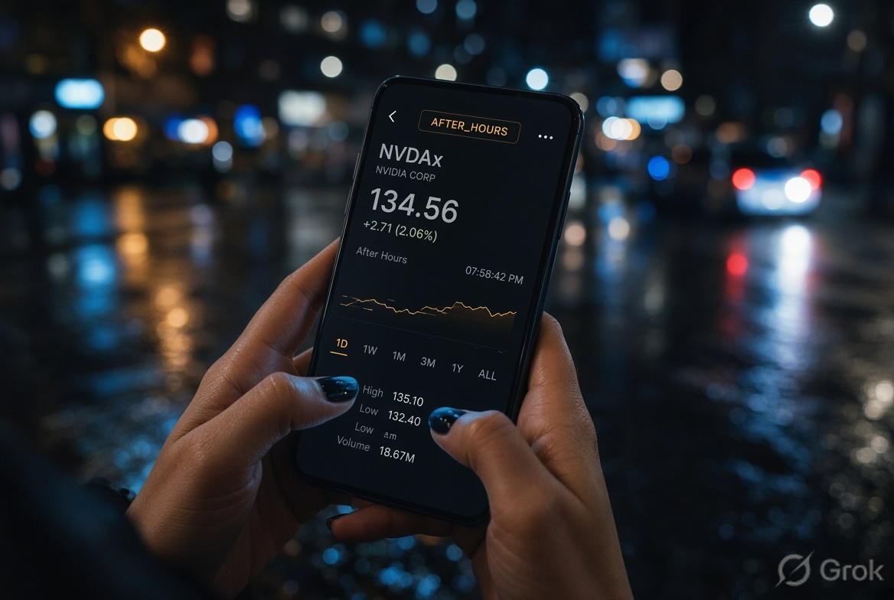
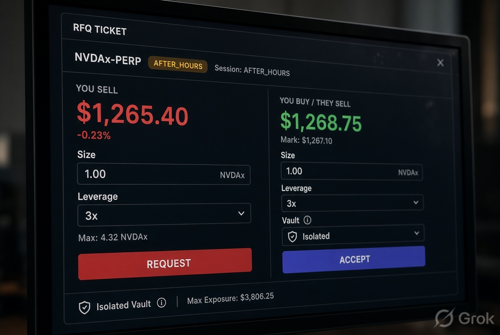

AFTER_HOURS
NVDAx-PERP
Isolated
3x cap
RFQ
USDC
Isolated perpetual markets on the onchain mark of NVDAx and TSLAx. Trackers, not shares. RFQ, not a pool. The book that stays open when the floor goes dark.
02 / Insight
NVDAx and TSLAx already live as tracker tokens. When US cash closes they keep floating. Markov is the leveraged book for that window — nights, weekends, holidays. Weekend is the product, not a footnote.

AFTER_HOURS03 / Mechanism
You request. A quoter answers. You accept or you walk. Each market has its own vault, published OI, and per-wallet cap. Collateral is USDC. Same-name xStock collateral only if the hooks are understood.
04 / v1 markets
Perpetual on the onchain mark of a tracker token. Trackers generally have no voting rights and are not the listed share. No BTC. No ETH. No SOL perps. Factory comes later.

05 / Beachhead
Phantom. Kraken Wallet. Not “crypto Twitter.” First seats go to wallets that already hold the tracker. Quoters next. Retail geo list after counsel writes it down.
06 / What this is not
No points. No airdrop. No implied FDV. Do not read this as “onchain NVIDIA stock” or “1:1 real shares.” It is a perp on a tracker mark. Assume restrictions until a lawyer lists jurisdictions.
07 / Early access
Tiny caps first. One market, then two. First external trader in week three of the Fair build. If you quote, say so. If you already hold the tracker, say so.
Colosseum Crypto World’s Fair · build 14 Sep–12 Oct 2026.
